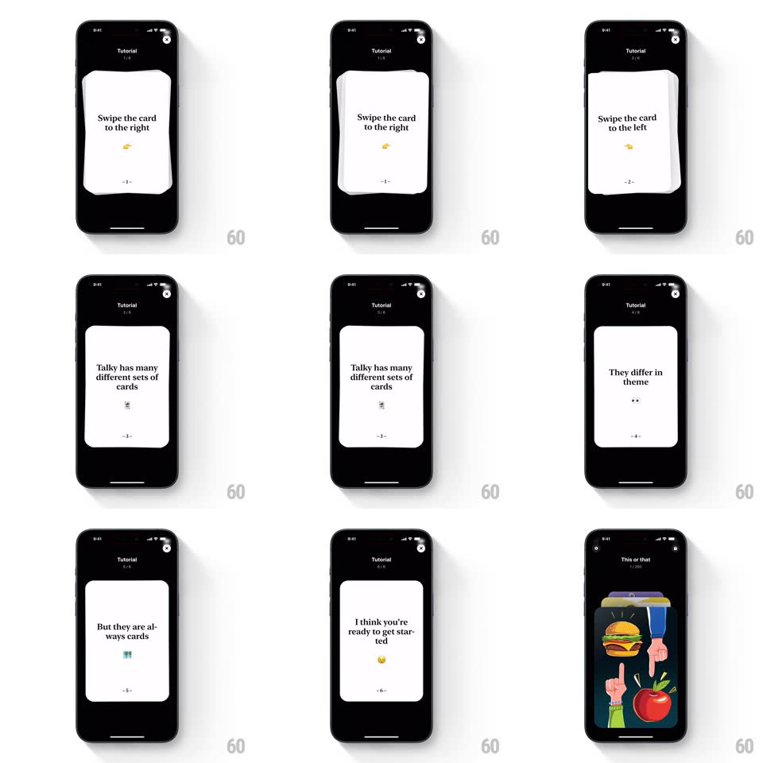

Media
Frame-by-frame

Rebuild this interaction 1:1: Talky's swipe tutorial - a deck of white instruction cards teaches the swipe: drag a card, feel it tilt with the drag, fling it off-screen right, and the next card settles in, six steps to "I think you're ready to get started".

Rebuild this interaction 1:1: Talky's swipe tutorial - a deck of white instruction cards teaches the swipe: drag a card, feel it tilt with the drag, fling it off-screen right, and the next card settles in, six steps to "I think you're ready to get started".
## Integration
Integration: stack-agnostic spec - springs given as stiffness/damping, timed motions as duration + curve; map every value to your framework and animation library of choice.
## Scene
Black screen, "Tutorial 1/6" top: a stack of rounded white cards, the top one carrying a short line ("Swipe the card to the right", "Talky has many different sets of cards", "They differ in theme", "But they are always cards", "I think you're ready to get started") plus a tiny emoji, its page number centered low; the final frame lands in the real game ("This or that", burger vs apple illustration).
## Motion spec
Pattern: physics card deck tutorial.
- Drag: the card follows the finger 1:1 horizontally and rotates proportionally (translation * 0.1deg/px, up to ~12deg); the card beneath scales 0.95 -> 1 and brightens as the top card leaves.
- Fling past threshold (~35% width): the card sails off with its drag velocity plus spin, fading over the last 20%; below threshold it springs back to center (spring ~260/20) with a soft wobble.
- Each settled card's text fades up in two lines (stagger 100ms); its tiny emoji pops (scale 0.5 -> 1, spring ~450/20).
- The step counter ("1/6") ticks with a 150ms crossfade per card.
- The last swipe slides the tutorial deck out entirely and the first real game card drops in from above (spring ~280/22).
## Calibration
- Tilt direction follows drag side - left drag tilts counterclockwise, right clockwise.
- The deck is 3 cards deep visually; deeper cards are barely peeking.
## Reduced motion
Cards slide off without rotation; stack crossfades.
## Don't miss
- The tutorial cards use the same physics as the real game - the tutorial IS practice.
- The purple question-mark card is the cover card of the deck, seen before card 1.